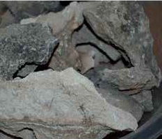
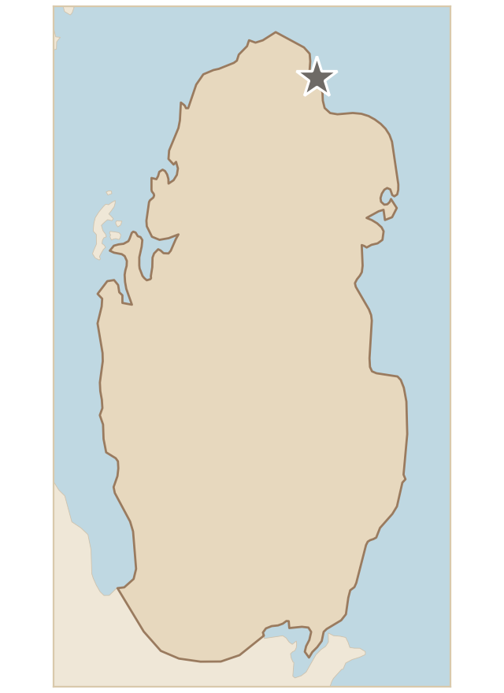

تربة تتكون من قطع كبيرة من الحجر الجيري، ولونها رمادي فاتح إلى رمادي داكن. وتشير هذه الخصائص إلى وجود نسبة عالية من الكالسيوم، وهي نموذجية للتربة الجيرية الموجودة في قطر. وهذه التربة تتشكل عادةً في المناطق الجافة، وتتسم بالصلابة وقلة التجوية.
Soil made up of large pieces of limestone, light grey to dark grey in colour. These characteristics indicate a high calcium content and are typical of the calcareous soil found in Qatar. This soil usually forms in dry regions and is characterised by hardness and little weathering.